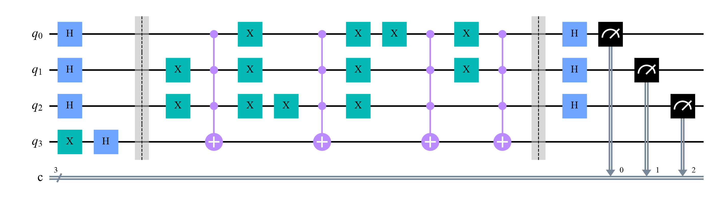

<X> of the control: before 1.0 after -1.0 <X> of the target : before -1.0 after -1.0
Quantum Computing
 about 12 min
about 12 min qc-w5d3.ipynb
qc-w5d3.ipynb
Phase kickback and Deutsch–Jozsa
Turn a function's answers into signs, let the signs interfere, and decide a question about all inputs with a single query.
In this lesson you will
- Describe an oracle: a function hidden inside a gate
- Explain phase kickback: with the output qubit in |−⟩, f(x) becomes a sign
- Run Deutsch–Jozsa and say exactly what its one query buys
Warm-up
1 minOne question instead of five

A friend has a secret function of three bits. They promise it's either constant (the same answer for all 8 inputs) or balanced (0 for exactly half of them, 1 for the other half). Asking one input at a time, you might need 5 questions to be sure. A quantum computer needs one. Today's lesson shows the trick, which is the seed of every famous quantum algorithm.
Big idea
4 minOracles, kickback and interference
Oracles. A function of an -bit input can be hidden inside a gate, called an oracle:
It flips the output qubit exactly when ( is XOR). It's reversible, so it's a valid quantum gate. One use of is one query, and a query can act on a superposition of inputs.
Phase kickback. Put the output qubit in . Flipping gives , so:
The output qubit doesn't change; the answer is "kicked back" as a sign on . (The smallest example: a CNOT with its target in acts as a Z on its control.)
Deutsch–Jozsa. Three steps on the inputs:
- H on every input qubit: all inputs, with equal amplitudes.
- One query: input gets the sign .
- H on every input qubit again, then measure.
The amplitude of at the end is the average of all the signs:
Constant: every path to has the same sign, and they add up. Balanced: half plus, half minus, and they cancel exactly. That's week 3's interference, now doing computation. So: measure means constant, anything else means balanced. Always, after one query.
Honest fine print: classically, to be certain you need queries in the worst case (513 for ). But a classical guesser who asks a few random inputs is right with high probability. So the quantum advantage here is about certainty, on an artificial problem. Its real value is the pattern, H, oracle, H, which tomorrow's algorithm and later ones such as Simon's and Shor's build on.
Kickback writes the answers as signs; Hadamards make the signs interfere; one measurement reads a property of all the answers at once.
Play
3 minQuestion the function
On the left, ask the hidden function one input at a time until you're sure. On the right, step through Deutsch–Jozsa and watch the amplitudes: orange bars carry a minus sign.
Try this
Play the mystery a few times on the left: how many questions do you usually need? Then try the named functions on the right. After step 2 the signs show the whole truth table, but step 3 squeezes it into one fact: does all the amplitude land on 000, or none of it?
Code
2 minDeutsch–Jozsa in Qiskit
The notebook for this lessonEvery code cell below, with what it printed, is in
qc-w5d3.ipynb. To change the code and run it yourself, open the notebook in Google Colab (free, in your browser) or download it for your own Jupyter.import numpy as np
from qiskit import QuantumCircuit
from qiskit.quantum_info import Statevector, SparsePauliOp
from qiskit.primitives import StatevectorSampler
# a CNOT whose target is |->: watch what happens to the CONTROL
qc = QuantumCircuit(2)
qc.h(0) # control q0 in |+>
qc.x(1)
qc.h(1) # target q1 in |->
before = Statevector(qc)
qc.cx(0, 1)
after = Statevector(qc)
X0 = SparsePauliOp("IX") # X on qubit 0 (Qiskit reads Pauli strings right to left)
X1 = SparsePauliOp("XI") # X on qubit 1
print("<X> of the control: before", round(before.expectation_value(X0).real, 3), " after", round(after.expectation_value(X0).real, 3))
print("<X> of the target : before", round(before.expectation_value(X1).real, 3), " after", round(after.expectation_value(X1).real, 3))What it printed in the notebook
def oracle_from_table(table, n=3):
"""A gate on n input qubits plus an output qubit (number n): flips the output when table[x] = 1."""
qc = QuantumCircuit(n + 1, name="U_f")
for x, fx in enumerate(table):
if fx:
zeros = [q for q in range(n) if not (x >> q) & 1] # bit q of x lives on qubit q
if zeros:
qc.x(zeros) # so that this x looks like 11...1
qc.mcx(list(range(n)), n) # flip the output if all inputs are 1
if zeros:
qc.x(zeros) # undo
return qc
def dj_circuit(oracle, n=3):
qc = QuantumCircuit(n + 1, n)
qc.x(n)
qc.h(n) # output qubit in |->: ready for kickback
qc.h(range(n)) # all 2^n inputs at once
qc.barrier()
qc.compose(oracle, inplace=True) # ONE query
qc.barrier()
qc.h(range(n)) # interference
qc.measure(range(n), range(n))
return qc
parity = [bin(x).count("1") % 2 for x in range(8)]
dj_circuit(oracle_from_table(parity)).draw("mpl", style="clifford", fold=-1)What it printed in the notebook

rng = np.random.default_rng(7)
functions = {
"constant 0": [0] * 8,
"constant 1": [1] * 8,
"parity x0 ^ x1 ^ x2": parity,
"majority of 3": [int(bin(x).count("1") >= 2) for x in range(8)],
"random balanced": list(rng.permutation([0] * 4 + [1] * 4)),
}
sampler = StatevectorSampler(seed=1)
for name, table in functions.items():
counts = sampler.run([dj_circuit(oracle_from_table(table))], shots=1000).result()[0].data.c.get_counts()
verdict = "constant" if counts.get("000", 0) == 1000 else "balanced"
print(f"{name:20s} table {''.join(map(str, table))} -> {counts} -> {verdict}")What it printed in the notebook
constant 0 table 00000000 -> {'000': 1000} -> constant
constant 1 table 11111111 -> {'000': 1000} -> constant
parity x0 ^ x1 ^ x2 table 01101001 -> {'111': 1000} -> balanced
majority of 3 table 00010111 -> {'100': 223, '111': 270, '001': 239, '010': 268} -> balanced
random balanced table 01101100 -> {'110': 223, '111': 270, '010': 239, '011': 268} -> balancedBalanced functions never give 000. Look at which strings they give: for parity it's always 111. Hold that thought until tomorrow.
Your turn
2 minYour turn: plain-gate oracles, and a broken promise
Build the oracle for with two CNOTs, and with one Toffoli. The second one is neither constant nor balanced. What does the algorithm say then?
def oracle_xor02():
qc = QuantumCircuit(4)
# TODO: flip the output qubit 3 once for x0 and once for x2
return qc
def oracle_and01():
qc = QuantumCircuit(4)
# TODO: flip the output qubit 3 when x0 and x1 are both 1
return qc
for name, oracle in [("x0 xor x2", oracle_xor02()), ("x0 and x1", oracle_and01())]:
counts = sampler.run([dj_circuit(oracle)], shots=1000).result()[0].data.c.get_counts()
print(name, counts)Need a hint?
XOR: qc.cx(0, 3) and qc.cx(2, 3), since flipping twice is the same as flipping by . AND: qc.ccx(0, 1, 3).
Show a solution
def oracle_xor02():
qc = QuantumCircuit(4)
qc.cx(0, 3)
qc.cx(2, 3)
return qc
def oracle_and01():
qc = QuantumCircuit(4)
qc.ccx(0, 1, 3)
return qc
for name, oracle in [("x0 xor x2", oracle_xor02()), ("x0 and x1", oracle_and01())]:
counts = sampler.run([dj_circuit(oracle)], shots=1000).result()[0].data.c.get_counts()
print(name, dict(sorted(counts.items())))
print("x0 xor x2 never gives 000: balanced. Notice it always gives 101, the bits that f looks at (tomorrow's lesson!).")
print("x0 and x1 gives 000 about a quarter of the time: (1/8 * sum of the signs)^2 = (4/8)^2. Without the promise, one shot proves nothing.")What it printed in the notebook
x0 xor x2 {'101': 1000}
x0 and x1 {'000': 239, '001': 268, '010': 223, '011': 270}
x0 xor x2 never gives 000: balanced. Notice it always gives 101, the bits that f looks at (tomorrow's lesson!).
x0 and x1 gives 000 about a quarter of the time: (1/8 * sum of the signs)^2 = (4/8)^2. Without the promise, one shot proves nothing.Check yourself
1 minQuick check
Question 1 of 3
The output qubit of an oracle is in and . What does do to ?
Question 2 of 3
Deutsch–Jozsa on 3 inputs measures 101. The function is…
Question 3 of 3
Why does a balanced function never give ?
Wrap-up
1 minToday in one sentence
Quantum link
Quantum feature maps for machine learning work the same way: data enters as phases on many basis states at once, and later gates make those phases interfere. The "data re-uploading" and kernel circuits in the Quantum ML tutorial are, at heart, H, phases, H, with the data playing the role of the function.
Go deeper (optional)
Nielsen and Chuang, sections 1.4.3 (Deutsch's algorithm) and 1.4.4 (the Deutsch–Jozsa algorithm). IBM Quantum Learning's free course Fundamentals of quantum algorithms (John Watrous), lesson 1, covers query algorithms carefully, including what "advantage" means here.
Next in Quantum Computing: Bernstein–Vazirani, where the measured string is the answer itself.

That's the lesson!
Tap the button to save it. Short and steady wins.
Marked by mistake? Undo